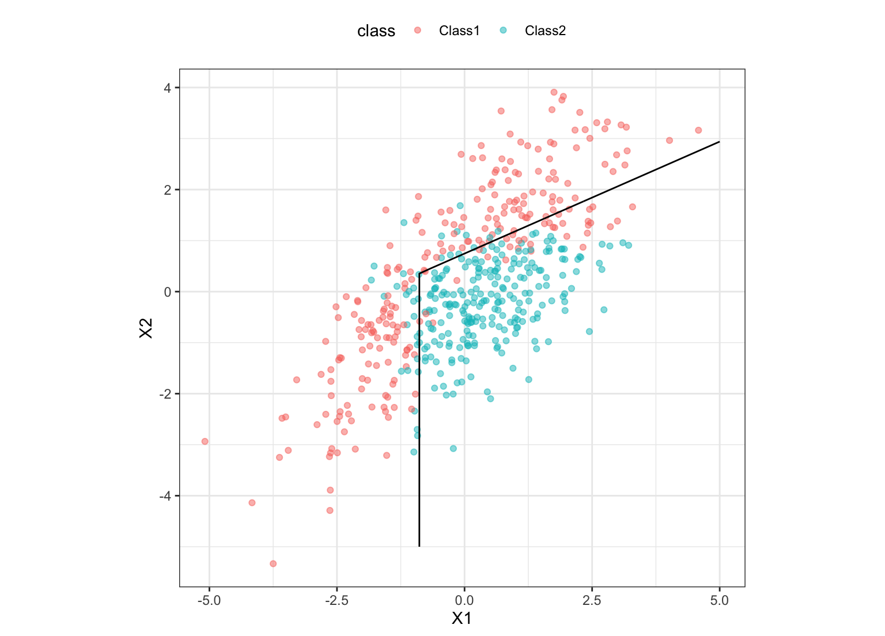

discrim_flexible.Rddiscrim_flexible() is a way to generate a specification of a flexible
discriminant model using features created using multivariate adaptive
regression splines (MARS).
discrim_flexible(mode = "classification", num_terms = NULL, prod_degree = NULL, prune_method = NULL) # S3 method for discrim_flexible update(object, num_terms = NULL, prod_degree = NULL, prune_method = NULL, fresh = FALSE, ...)
| mode | A single character string for the type of model. The only possible value for this model is "classification". |
|---|---|
| num_terms | The number of features that will be retained in the final model, including the intercept. |
| prod_degree | The highest possible interaction degree. |
| prune_method | The pruning method. |
| object | A flexible discriminant model specification. |
| fresh | A logical for whether the arguments should be modified in-place of or replaced wholesale. |
| ... | Not used for |
Flexible discriminant analysis (FDA) uses the work of Hastie et al (1994) to create a discriminant model using different feature expansions. For this function, MARS (Friedman, 1991) hinge functions are used to nonlinearly model the class boundaries (see example below). The mda and earth packages are needed to fit this model.
The main arguments for the model are:
num_terms: The number of features that will be retained in the
final model.
prod_degree: The highest possible degree of interaction between
features. A value of 1 indicates and additive model while a value of 2
allows, but does not guarantee, two-way interactions between features.
prune_method: The type of pruning. Possible values are listed
in ?earth.
These arguments are converted to their specific names at the
time that the model is fit. Other options and argument can be
set using set_engine(). If left to their defaults
here (NULL), the values are taken from the underlying model
functions. If parameters need to be modified, update() can be used
in lieu of recreating the object from scratch.
The model can be created using the fit() function using the following
engines:
R: "earth" (the default)
Engines may have pre-set default arguments when executing the model fit call. For this type of model, the template of the fit calls are:
earth engine:
mda::fda(formula = missing_arg(), data = missing_arg(),
nprune = num_terms, degree = prod_degree, pmethod = prune_method,
method = earth::earth)
Friedman (1991), Multivariate Adaptive Regression Splines (with discussion), Annals of Statistics 19:1, 1–141. Hastie, Tibshirani and Buja (1994), Flexible Discriminant Analysis by Optimal Scoring, Journal of the American Statistical Association, 1255-1270.
parabolic_grid <- expand.grid(X1 = seq(-5, 5, length = 100), X2 = seq(-5, 5, length = 100)) fda_mod <- discrim_flexible(num_terms = 3) %>% # increase `num_terms` to find smoother boundaries set_engine("earth") %>% fit(class ~ ., data = parabolic) parabolic_grid$fda <- predict(fda_mod, parabolic_grid, type = "prob")$.pred_Class1 library(ggplot2) ggplot(parabolic, aes(x = X1, y = X2)) + geom_point(aes(col = class), alpha = .5) + geom_contour(data = parabolic_grid, aes(z = fda), col = "black", breaks = .5) + theme_bw() + theme(legend.position = "top") + coord_equal()model <- discrim_flexible(num_terms = 10) model#> Flexible Discriminant Model Specification (classification) #> #> Main Arguments: #> num_terms = 10 #>#> Flexible Discriminant Model Specification (classification) #> #> Main Arguments: #> num_terms = 6 #>